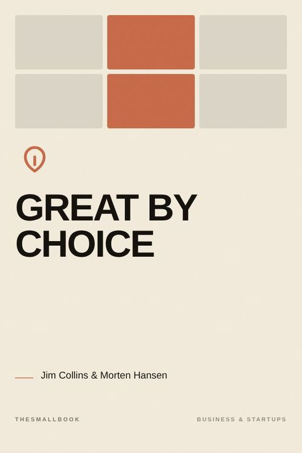

Library › Ask the Library › How do I succeed in uncertain times?
How do I succeed in uncertain times?
The short answer
You can't predict chaos, you can prepare for it. March 20 miles in every weather, fire cheap bullets before big cannonballs, keep buffers, and hold a simple recipe that never changes.
The books behind the answer

Great by Choice
Jim Collins & Morten Hansen · 2011 · 8 min · 6 lessons
Great companies don't predict the future - they prepare for it: consistent marches, cheap bullets, and fanatic discipline.
- The 20 Mile March: Discipline Beats Talent: A performance floor AND ceiling in good times and bad, consistency beats sprinting.
- Bullets Before Cannonballs: Test with cheap experiments first; bet big only after a bullet hits.
- Productive Paranoia: Prepare for the Unpredictable: Keep reserves and run what-if drills, the calm in chaos is manufactured beforehand.

Antifragile
Nassim Nicholas Taleb · 2012 · 8 min · 6 lessons
Beyond resilience: don't just survive shocks - design your life so volatility, stress, and chaos make you better.
- The Barbell: Extreme safety + wild bets, nothing in the middle, you can't lose everything and might win big.
A failure that proves it
Why did The Vasa fail?
1628 · HISTORY · Loss: Sweden's flagship, maiden voyage
The Vasa warship was rushed to launch and sank in its own harbor. In chaos, the prepared survive; the rushed sink.
A test you're afraid to report is a catastrophe on layaway. Power that can't hear 'the ship will sink' guarantees it does - build channels where bad news outranks rank.
Questions people ask next
Can I read this in Hindi?
Yes. This answer is written in simple English. Open any linked book and choose Hindi or Hinglish to read the full lessons in your language, with audio where available.